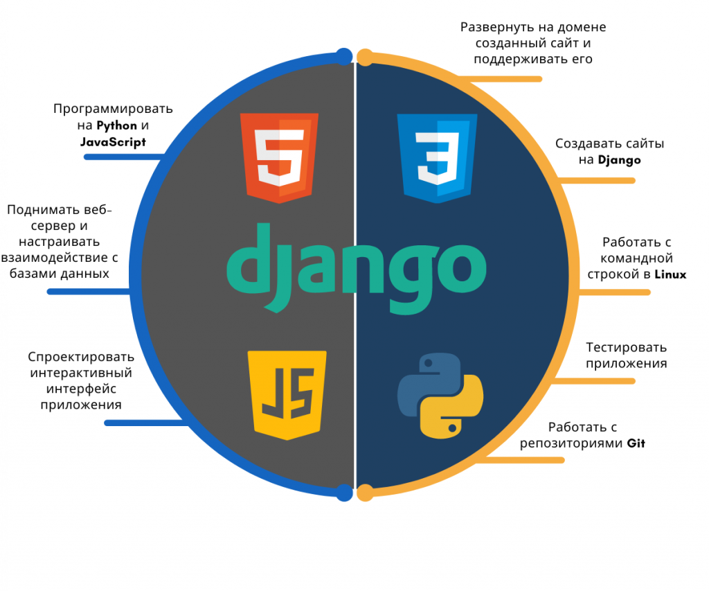

|
Разработка WEB приложений

В настоящий момент мое хобби и дело, которым я занимаюсь - это изучение и применение на практитке новых технологий,
связанных с full stack python web разработкой. В моем саквояже уже есть много инструментов, а некоторые я только изучаю.
В любом случае вот они все:
- Python, Django Framework, Django REST Framework, REST API, Swagger, HTML, CSS, GIT
- Postgres, MS SQL, My SQL
- Currently studying React, JavaScript, TypeScript, VueJS
- C++, Delphi, MS Visual Basic for App, WordPress, Elementor, Qlick Sence
- Windows, Linux, Mac OS, VMWare ESXi, Docker, Cisco Pix, Juniper NetScreen, ISA Server, AD, DNS, DHCP, Proxy, MS Exchange
- Agile, Scrum, Kanban, Jira, Confluence, Bitrix24, TFS, MS Project, 1C, Advanta, Asana, Trello
- English (progress) - B1/B2
|
|